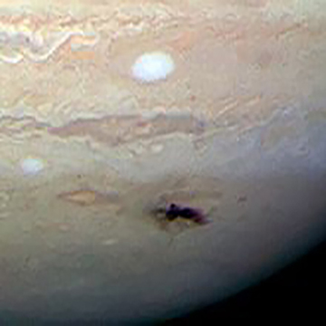

Europa Moons
This diagram shows the Trojan asteroids in Jupiter's orbit, as well as the main asteroid belt.s
- Diameter (km)
- 816520800 km
- Mass (kg)
- 740573600 km
- Orbital Period
- 4332.59 d

Hubble
Hubble image taken on July 23 showing a blemish of about 5,000 miles long left by the 2009 Jupiter impact
- Diameter (km)
- 816520800 km
- Mass (kg)
- 740573600 km
- Orbital Period
- 4332.59 d